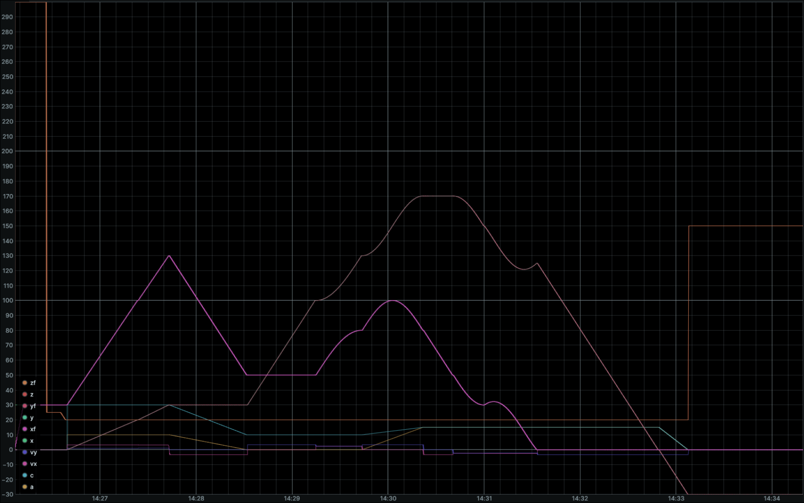

1 Low-Level Kernel
The low-level software is based on 3-axes cncpp one, that is the outcome of the Precision Engineering Mod.2 course. It implements:
G Codeparsing;- Motion profiles computation;
MQTTinterface for fast movements that require feedbacks from the machine.
The used fork additionally implements:
- 2 additional positioning axes;
- Tool Radius Compensation;
- Lookhaed feedrate smoothing;
- MADS framework interface in change of
MQTTcommunication.
1.1 Trajectory Planning and Interpolation
The core of the low-level kernel is responsible for translating human-readable G-Code into synchronized, hard real-time spatial setpoints for the 5-axis machine. This process is divided into three sequential pipeline stages: Parsing, Profiling, and Interpolation.
1.1.1 G-Code Parsing and Lookahead
The parsing stage reads the raw G-Code instructions and converts them into internal mathematical objects called Blocks. Each block represents a geometric primitive—either a linear segment (G01) or an arc (G02/G03)—containing the target spatial coordinates \((X, Y, Z, A, C)\) and the requested feedrate.
To prevent the machine from coming to a complete halt between consecutive blocks, the kernel implements a Lookahead Planner. The planner evaluates an horizon of upcoming blocks to compute the maximum safe junction velocities based on the geometric angle between segments. It then propagates a backward braking profile, ensuring that each block receives dynamically safe initial (\(v_0\)) and final (\(v_f\)) boundary velocities without violating the machine’s mechanical limits.
1.1.2 S-Curve Velocity Profiling
Standard CNC controllers often rely on trapezoidal velocity profiles, which apply a constant acceleration. This introduces an infinite jerk (the derivative of acceleration) at the corners of the velocity profile, causing severe mechanical vibrations, resonance, and stalling on high-inertia systems.
To guarantee smooth motion, the kernel implements a Jerk-limited S-Curve velocity profile. This transforms the acceleration into a trapezoidal shape, rounding the corners of the velocity curve into an “S” shape. The mathematical profile is split into 7 distinct temporal phases:
- Acceleration Build-up: Jerk \(J > 0\). Acceleration increases linearly to \(A_{max}\).
- Constant Acceleration: Jerk \(J = 0\). Acceleration remains at \(A_{max}\).
- Acceleration Ramp-down: Jerk \(J < 0\). Acceleration decreases to \(0\).
- Cruise Phase: Jerk \(J = 0\), Acceleration \(A = 0\). Velocity is strictly constant.
- Deceleration Build-up: Jerk \(J < 0\). Deceleration increases linearly to \(-A_{max}\).
- Constant Deceleration: Jerk \(J = 0\). Deceleration remains at \(-A_{max}\).
- Deceleration Ramp-down: Jerk \(J > 0\). Deceleration returns to \(0\).
For any given phase with a constant jerk \(j\), starting from an initial time \(t_0=0\) with state variables \(s_0\), \(v_0\), and \(a_0\), the instantaneous kinematic state is integrated over time \(\Delta t\) using the following equations:
\[a(\Delta t) = a_0 + j \cdot \Delta t\] \[v(\Delta t) = v_0 + a_0 \cdot \Delta t + \frac{1}{2} j \cdot \Delta t^2\] \[s(\Delta t) = s_0 + v_0 \cdot \Delta t + \frac{1}{2} a_0 \cdot \Delta t^2 + \frac{1}{6} j \cdot \Delta t^3\]
By enforcing \(J_{max}\) limits alongside \(A_{max}\) and \(V_{max}\), the kernel ensures that the actuators never experience instantaneous torque demands, drastically improving tracking accuracy during non-planar trajectories.
To formalize the mathematical execution, let \(t_k\) be the absolute time at the end of each phase \(k \in \{1, 2, ..., 7\}\), with \(t_0 = 0\). For any given phase, we define the local temporal variable \(\tau = t - t_{k-1}\), representing the time elapsed since the beginning of the current segment (\(0 \le \tau < t_k - t_{k-1}\)).
Assuming \(J\) as the maximum allowed jerk magnitude, \(A\) as the maximum acceleration, and \(D\) as the maximum deceleration, the instantaneous kinematic state of the machine is computed by integrating the piecewise functions for Jerk \(J(\tau)\), Acceleration \(a(\tau)\), Velocity \(v(\tau)\), and Displacement \(s(\tau)\):
Jerk Profile: \[ J(\tau) = \begin{cases} J & 0 \le t < t_1 \\ 0 & t_1 \le t < t_2 \\ -J & t_2 \le t < t_3 \\ 0 & t_3 \le t < t_4 \\ -J & t_4 \le t < t_5 \\ 0 & t_5 \le t < t_6 \\ J & t_6 \le t \le t_7 \end{cases} \]
Acceleration Profile: \[ a(\tau) = \begin{cases} J \tau & 0 \le t < t_1 \\ A & t_1 \le t < t_2 \\ A - J \tau & t_2 \le t < t_3 \\ 0 & t_3 \le t < t_4 \\ -J \tau & t_4 \le t < t_5 \\ -D & t_5 \le t < t_6 \\ -D + J \tau & t_6 \le t \le t_7 \end{cases} \]
Velocity Profile: \[ v(\tau) = \begin{cases} v_0 + \frac{1}{2} J \tau^2 & 0 \le t < t_1 \\ v_1 + A \tau & t_1 \le t < t_2 \\ v_2 + A \tau - \frac{1}{2} J \tau^2 & t_2 \le t < t_3 \\ v_3 & t_3 \le t < t_4 \\ v_4 - \frac{1}{2} J \tau^2 & t_4 \le t < t_5 \\ v_5 - D \tau & t_5 \le t < t_6 \\ v_6 - D \tau + \frac{1}{2} J \tau^2 & t_6 \le t \le t_7 \end{cases} \]
Displacement Profile: \[ s(\tau) = \begin{cases} s_0 + v_0 \tau + \frac{1}{6} J \tau^3 & 0 \le t < t_1 \\ s_1 + v_1 \tau + \frac{1}{2} A \tau^2 & t_1 \le t < t_2 \\ s_2 + v_2 \tau + \frac{1}{2} A \tau^2 - \frac{1}{6} J \tau^3 & t_2 \le t < t_3 \\ s_3 + v_3 \tau & t_3 \le t < t_4 \\ s_4 + v_4 \tau - \frac{1}{6} J \tau^3 & t_4 \le t < t_5 \\ s_5 + v_5 \tau - \frac{1}{2} D \tau^2 & t_5 \le t < t_6 \\ s_6 + v_6 \tau - \frac{1}{2} D \tau^2 + \frac{1}{6} J \tau^3 & t_6 \le t \le t_7 \end{cases} \]
(Note: \(v_k\) and \(s_k\) represent respectively the initial velocity and displacement evaluated at the boundary of the corresponding phase \(k\)).
In the C++ kernel implementation, this rigorous 7-phase integration is evaluated sequentially during the lambda() interpolation call. By enforcing \(J\) limits alongside \(A\) and maximum feedrate, the kernel ensures that the actuators never experience instantaneous torque demands, drastically improving tracking accuracy during non-planar trajectories.
1.1.3 Discrete-Time Interpolation
Once the continuous mathematical profile is computed, it must be sampled to generate deterministic setpoints for the SPI communication ring.
The interpolator acts as a discrete-time sampler running at the predefined control frequency. At every discrete tick \(t_k\), the interpolator evaluates the S-Curve polynomial to extract the scalar distance traveled \(s(t_k)\). This distance is then normalized against the total block length \(L\) to obtain a dimensionless parameter \(\lambda \in [0, 1]\):
\[\lambda(t_k) = \frac{s(t_k)}{L}\]
The target coordinates for all five axes are simultaneously interpolated using this normalized parameter. For a linear block starting at point \(P_{start}\) and ending at \(P_{end}\):
\[P(t_k) = P_{start} + \lambda(t_k) \cdot (P_{end} - P_{start})\]
To prevent Temporal Quantization Error—which occurs when the exact mathematical duration of a block is not a perfect multiple of the machine’s sampling tick—the interpolator tracks the fractional time remainder at the end of each block. This “time accumulator” is seamlessly carried over to the subsequent block, guaranteeing perfectly fluid joint transitions without instantaneous acceleration spikes.
1.2 MADS Interface
The software kernel runs by its own since it is fed with a valid G Code and a yml file as machine parameters configuration file. It is needed to interface it with the MADS environment.
MADS is a cross-plattform broker-based framework that can be used to run different agents on multiple machines. Its strenght stands on the idea to be a plug-and-play, robust and efficient software. In this case, it is used to interface the low-level kernel with both the real machine and a simulation environment based on Matlab Simulink.
MADS is a ZeroMQ-based framework, so it is needed to interface the low-level kernel with the MADS network. From this need the dedicated monolithic agent arises. This agent directly interfaces with the already structured FSM thanks by following the fsm guide.
While the interested data is sent through the MADS communication network, it is possible to both interface with the real machine and simulation environment by respectively using the agents spi_agent and fmu_agent.
1.2.1 Machine
The spi_agent is a monolithic MADS agent specifically designed for the Raspberry Pi 5 to communicate with the Axes Controller Board (STM32H7) via the SPI peripheral. It implements a high-performance Full-Duplex logic, allowing simultaneous reading and writing during every loop cycle. Binary Protocol and Memory Alignment
To ensure total compatibility between the ARM architecture of the Raspberry Pi and the MCU of the controller board, the communication protocol uses strict 1-byte alignment (via #pragma pack(push, 1)) to prevent memory padding issues.
1.2.1.1 TX: Raspberry Pi → Microcontroller
Sent whenever a valid JSON message is received from the MADS network. - Total Size: 32 Bytes - Structure (Pack):
| Offset | Type | Field | Description |
|---|---|---|---|
| 0 | uint8_t |
start |
Start Byte: 0xAA |
| 1 | float |
x |
X-axis coordinate (4 bytes) |
| 5 | float |
y |
Y-axis coordinate (4 bytes) |
| 9 | float |
z |
Z-axis coordinate (4 bytes) |
| 13 | float |
a |
Pitch/Rotation (4 bytes) |
| 17 | float |
c |
Yaw/Rotation (4 bytes) |
| 21 | float |
vx |
Target velocity, x component, (4 bytes) |
| 25 | float |
vy |
Target velocity, y component, (4 bytes) |
| 29 | uint8_t |
check |
XOR Checksum of bytes 0-28 |
| 30 | uint8_t |
padding[66] |
Padding |
1.2.1.2 RX: Microcontroller → Raspberry Pi
Read during every agent loop cycle to update the machine status. - Total Size: 32 Bytes - Structure (PackFb):
| Offset | Type | Field | Description |
|---|---|---|---|
| 0 | uint8_t |
start |
Start Byte: 0xBB |
| 1 | uint32_t |
msg_id |
Sequence ID (only newer IDs are processed) |
| 5 | float |
xf |
Current X position (4 bytes) |
| 9 | float |
yf |
Current Y position (4 bytes) |
| 13 | float |
zf |
Current Z position (4 bytes) |
| 17 | float |
af |
Current A position (4 bytes) |
| 21 | float |
cf |
Current C position (4 bytes) |
| 25 | float |
error |
Current tracking error (4 bytes) |
| 29 | uint8_t |
check |
XOR Checksum of bytes 0-28 |
| 30 | uint8_t |
padding[26] |
Padding |
1.2.2 Simulator
When the real hardware is not available, Dedalus uses the FMU_agent to interface the motion kernel with a Digital Twin.
An FMU (Functional Mock-up Unit) is a file (ending in .fmu) that contains a simulation model following the FMI (Functional Mock-up Interface) standard. It allows models developed in environments like MATLAB Simulink or Modelica to be exported and executed as independent functional blocks within other software. Simulation Workflow
The FMU_agent acts as a bridge between the MADS communication network and the virtual model:
- Dynamic Modeling: The FMU contains the physical equations of the Dedalus axes, including motor torque constants, mass of the 3kg cradle, and friction of the MGN15 guides.
- Deterministic Execution: The agent steps the simulation forward in time, receiving the same JSON setpoints that would normally be sent to the SPI agent.
- Closed-Loop Feedback: The FMU calculates the resulting virtual position and sends it back to the MADS network as feedback. This allows the motion kernel to validate the G-code execution and the Feedforward/PID logic in a safe, virtual environment before deployment.
For this application, the FMU_agent is exploited in trigger mode: the agent is triggered whenever an input occurs. In this way, the real-time clock runs on the master agent, that is the same that runs the FSM. The FMU is subjected to this clock, in order to get a synchronized simulation. Since the machine model implements a discrete controller and it is exported within a fixed-step integrator, it is required to get to the exported plant a time interval equal to a multiple of the integration dt. For this reason, a dedicated implementation on the FMU_agent is developed.
The virtual model is exported from Matlab Simulink and, in particular, it is exported as Co-Simulation 3.0. It is currently tested with the ode14x and 0.0001s as fixed step.
In this figure, it is shown the full simulation of a generic G-Code in which it is imposed a generic path with also some rotative axis inclinations:
